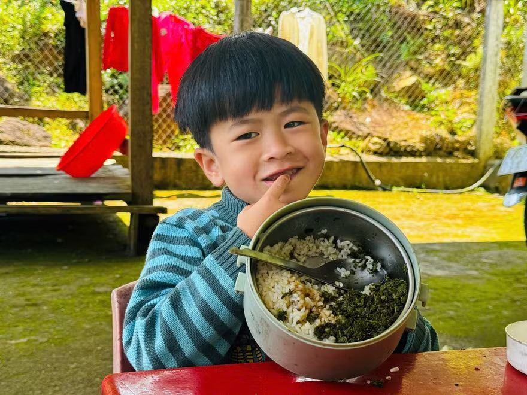
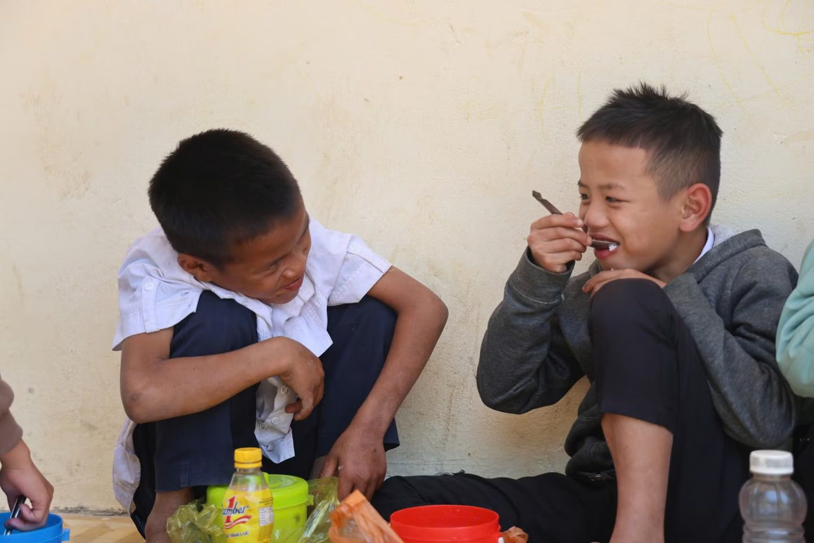
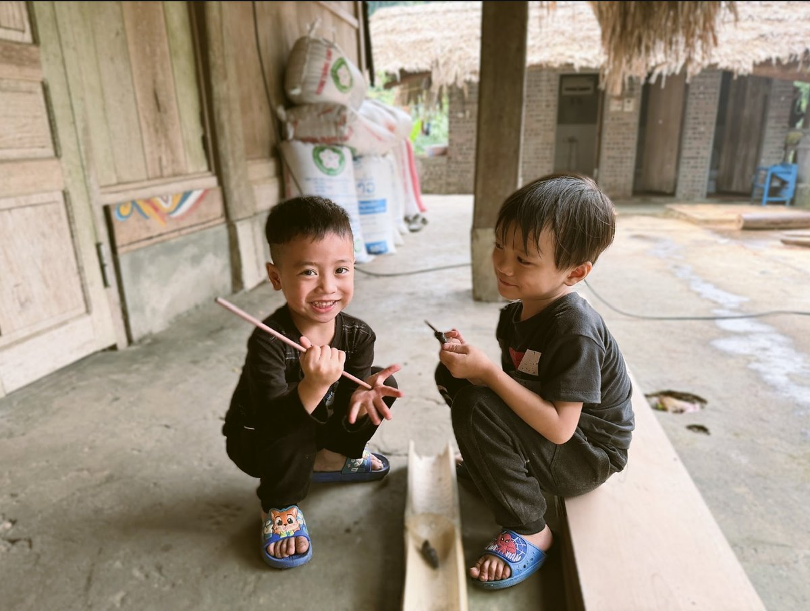
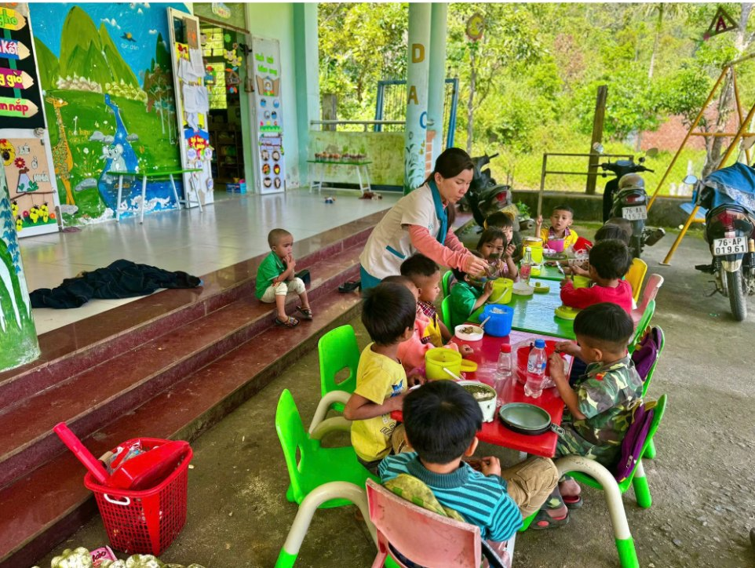
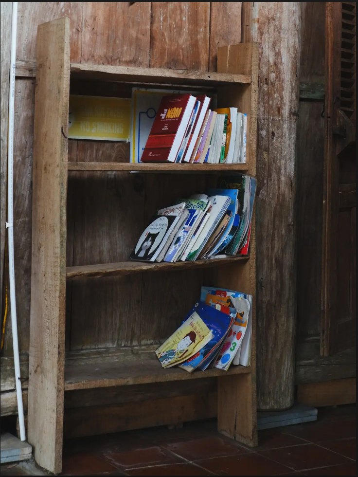
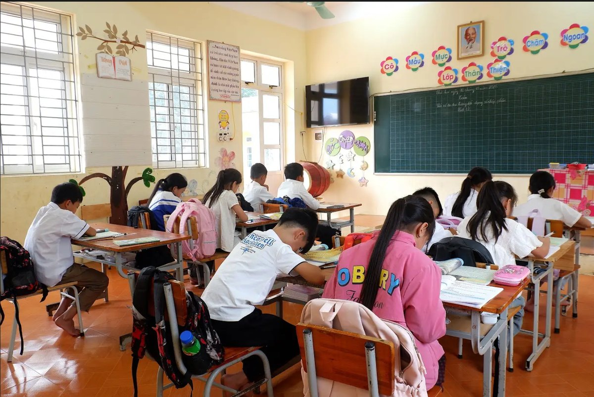
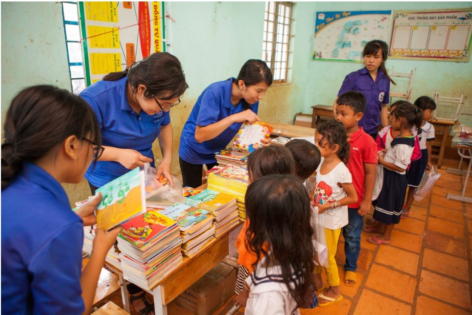

Mái trường giữa núi rừng Phong Nha: Nơi chúng em coi là nhà
Phương Thảo ·
Ở xã Thượng Trạch, giữa núi rừng Phong Nha - Kẻ Bàng, có những đứa trẻ như tụi em ít được ở bên bố mẹ. Với tụi em, trường không chỉ để học chữ mà còn là ngôi nhà thứ hai ấm áp. Những ngày đói ăn, thiếu mặc, những lần phải ra suối tắm giữa trời đông buốt giá, giờ đã xa dần nhờ có thầy cô thương yêu và nhà vệ sinh, nhà tắm mới.
Ngôi nhà thứ hai của những đứa trẻ thiếu tình thương

Nhiều bạn ở trường Phổ thông Dân tộc nội trú Bố Trạch cuối tuần, hoặc cứ hai ba tuần là được về nhà một lần. Riêng Đinh Chất, lớp 8, thì ở lại trường suốt. Mẹ Chất dặn: “Không có việc gì thì đừng về, ở trường với thầy cô. Cần thì mẹ nhờ người đón.” Bố Chất mất sớm, nhà trong núi sâu làm bằng gỗ đã mục, mẹ một mình nuôi bảy chị em nên bữa cơm đủ no cũng khó. Ở nhà, Chất chỉ có măng để ăn. Ở trường thì khác, ngày nào cũng đủ ba bữa, có thịt, có cá. Với Chất, trường chẳng khác chiếc phao cứu sinh, nên bạn luôn nhớ lời mẹ và ngoan ngoãn nghe thầy cô.
Cách đó ba cây số là điểm trường bản Bụt của trường Tiểu học số 1 Thượng Trạch. Ở đây, 27 đứa tụi em học ba lớp với ba cô giáo, cũng nhiều thiếu thốn lắm. Sáng nào tụi em cũng đến lớp với cái bụng đói, đôi chân đất, quần áo chỗ sờn chỗ rách.
Có hai cậu cháu Đinh Trình và Đinh Linh, hoàn cảnh thương lắm. Mẹ Linh gửi bạn cho bà ngoại, cũng là mẹ của Trình, rồi sang bản khác lấy chồng. Nhà có 10 người, bốn thế hệ chen nhau trong căn nhà nhỏ, quanh năm thiếu trước hụt sau. Sáng nào bà Y Mom cũng nắm cho hai cậu cháu ít nếp chấm muối rồi mới lên nương. Đến lớp, mỗi khi đói quá, hai bạn khóc òa lên thì cô Thúy Hà, vừa là cô giáo vừa là mẹ đỡ đầu, lại cho ăn thêm cơm, thêm mì tôm, ăn xong mới bắt đầu học chữ.
Cứ thế, trường trở thành ngôi nhà thứ hai. Ở đó, tụi em xem bạn bè là anh chị em, xem thầy cô như bố mẹ của mình.
Cuộc sống mới, thói quen sạch sẽ hơn

Ở trường tuy đủ đầy hơn ở nhà, nhưng tụi em vẫn còn thiếu nhiều thứ. Trường nằm sâu trong núi đá, chở vật liệu lên đã khó, xin kinh phí sửa sang lại càng khó hơn.
Hồi trước, nhà vệ sinh cũ ở trường Bố Trạch hay bị tắc, thiếu nước, mùi hôi bay cả vào phòng học. Chất và các bạn phải ra suối tắm, nhiều bạn nhịn đi vệ sinh nên đau bụng, có bạn nổi mẩn ngứa. Mùa đông, tắm suối xong tụi em lại đi nhặt lá, nhặt cành khô đốt lửa sưởi cho đỡ lạnh. Còn ở điểm trường bản Bụt thì chưa từng có nhà vệ sinh, các cô phải dắt từng đứa nhỏ ra khe suối xa, vất vả lắm.
Mới đây, Quỹ Hy Vọng cùng nhãn hàng Enterogermina (Opella Việt Nam) đã tặng cho hai điểm trường nhà vệ sinh và nhà tắm mới, đạt chuẩn. Hôm bàn giao, Chất dậy thật sớm để được vào tắm thử. Bạn bảo vẫn thích tắm suối lắm, nhưng từ giờ mùa đông không phải mặc đồ ướt đi xa, cũng không còn bị ám mùi khói nữa.
Ở bản Bụt, nhà vệ sinh mới có 4 khoang, chia riêng nam nữ, có cả bồn rửa tay đàng hoàng. Hôm đầu tiên, tụi em ngơ ngác, hồi hộp vì chưa bao giờ thấy những thứ này. Các cô cầm tay từng đứa, chỉ cách ngồi, cách xả nước, cách rửa tay cho đúng để bụng dạ khỏe mạnh. Tuy còn bỡ ngỡ, đứa nào cũng vui, vì từ nay không phải đội mưa hay đi xa ra suối nữa.
Tin liên quan
Xem thêm »
Hành trình tìm chữ: những bước chân của trẻ em vùng cao
Bữa cơm dưới chân núi Cà Đam: Vị muối rừng và ước mơ trong veo của em
Cánh cửa mở ra thế giới từ chiếc thư viện thân thiện nơi lớp học bản Sưng
Thế giới sau trang sách
Chiếc cặp sách mới và niềm vui ngày khai trường: Món quà nâng bước em đến lớp